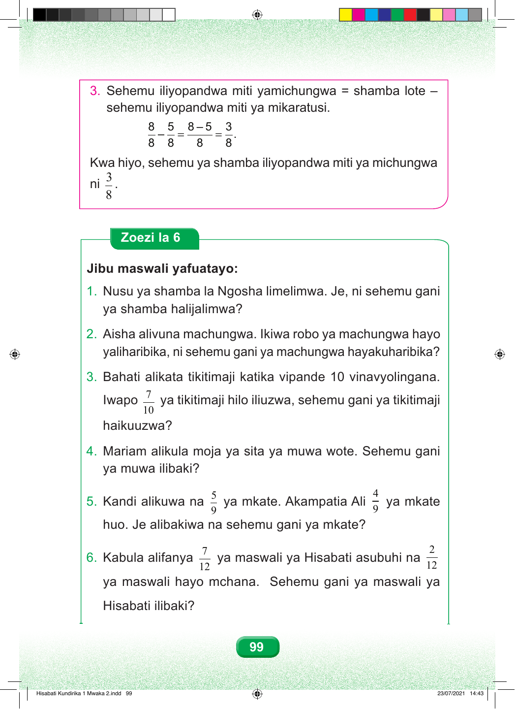

99 3. Sehemu iliyopandwa miti yamichungwa = shamba lote – sehemu iliyopandwa miti ya mikaratusi. 8 5 8 – 5 3 – = = . 8 8 8 8 Kwa hiyo, sehemu ya shamba iliyopandwa miti ya michungwa 3 ni . 8 Zoezi la 6 Jibu maswali yafuatayo: 1. Nusu ya shamba la Ngosha limelimwa. Je, ni sehemu gani ya shamba halijalimwa? 2. Aisha alivuna machungwa. Ikiwa robo ya machungwa hayo yaliharibika, ni sehemu gani ya machungwa hayakuharibika? 3. Bahati alikata tikitimaji katika vipande 10 vinavyolingana. 7 Iwapo ya tikitimaji hilo iliuzwa, sehemu gani ya tikitimaji 10 haikuuzwa? 4. Mariam alikula moja ya sita ya muwa wote. Sehemu gani ya muwa ilibaki? 5 4 5. Kandi alikuwa na ya mkate. Akampatia Ali ya mkate 9 9 huo. Je alibakiwa na sehemu gani ya mkate? 7 2 6. K abula alifanya ya maswali ya Hisabati asubuhi na 12 12 ya maswali hayo mchana. Sehemu gani ya maswali ya Hisabati ilibaki? Hisabati Kundirika 1 Mwaka 2.indd 99 23/07/2021 14:43